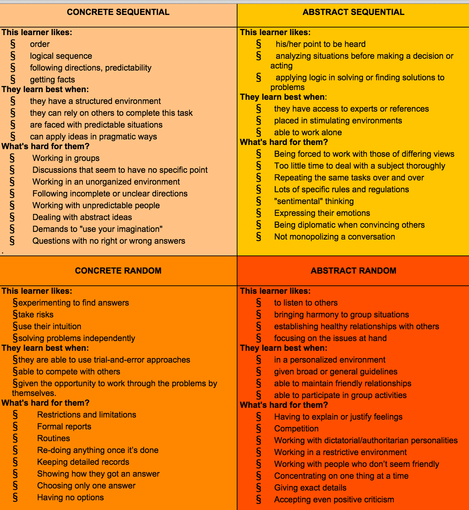

According to Anthony Gregorc, there are four learning styles: Concrete Sequential, Concrete Random, Abstract Sequential and Abstract Random. After taking his personality quiz I scored 12, 44, 32, and 32 respectively, indicating that I have a strong preference towards the Concrete Random thinking style. Though at the same time I have similar preferences towards the other two, Abstract Sequentila and Abstract Random.
What has been the biggest struggle for you?
The biggest struggle for me has been time management and not in the sense that I was expecting. Back in college I was really bad with procrastinating and would play way too many computer games than I should've allowed myself, but now I find myself spending far too much time perfecting small things, or just picking over details. It's a real struggle for me to only spend one hour for a blog post. Given any topic there's a lot to be said and choosing which bits I write about from a sea of information is really hard for me. I also find myself struggling to consolidate my thoughts. Communicating how I feel about certain topics is really hard for me since I rarely think about it, and almost never try to put my feelings into words. I can talk about technical concepts much easier and explain their usage but once I leave that area I find myself struggling to draw up my thoughts into words.
I also read slowly. If I do read faster, then I don't feel as though I'm really absorbing the material or meaning of what I'm reading and end up re-reading the material. This causes me to spend more time while researching topics or just learning about coding, however I'm not sure this is something I can avoid.
Is it related to the way you think and learn or is it related to something else?
Spending too much time on a topic for completeness and having trouble communicating my feelings are both definitely a part of the Abstract Sequential thinking type. However the slow reading I feel is something different, and I'm not exactly sure where I get that from.
Growth vs. Fixed Mindset
When I read about Growth and Fixed mindsets I found myself thinking that I aligned completely with the growth mindset. However, after some introspection I realized that probably everybody wants to believe or think they are focused on growth and don't have pride that gets in the way of their learning and I think that to an extent I may have some or a few fixed mindset traits that I need to continually work on eliminating. I certainly feel adaptable and flexible when it comes to embracing new ways of thinking or doing things, and especially when it comes to cultures- where I grew up in Hawaii on the island of Oahu is called "The Mixing Pot" and it's very difficult to live otherwise. However, I know that I have room for improvement when it comes to certain things. For example when you look at my learning styles you'll notice that I have a particularly low Concrete Sequential score. I believe this is correlated to my general disorganization and trouble with consolidating my thoughts. I think the more well rounded you become the closer to becoming equal your preference style scores will be and I think that all learing styles are important to being ready for whatever challenges out there that are waiting for us. I suppose for now I need a bit more structure in my life.